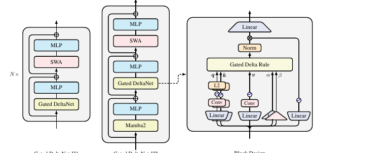
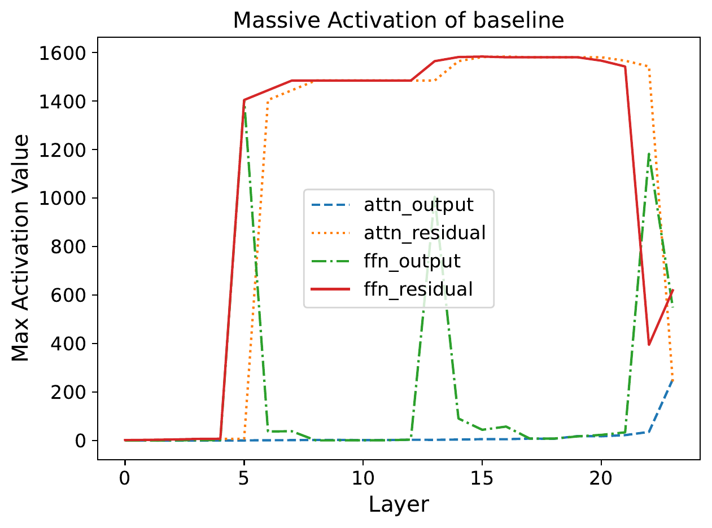
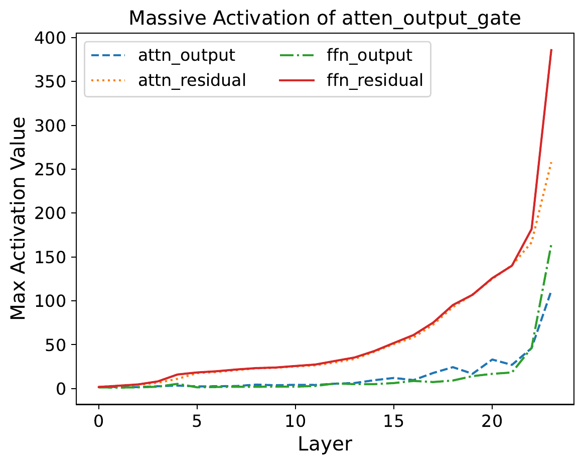
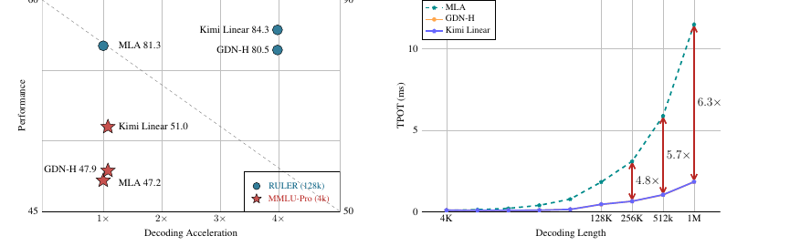

An interactive explainer
Remember, Forget, Correct
Softmax attention remembers everything — and pays for it with a cache that grows without bound. Linear attention promised a fixed-size memory instead, a single matrix you read and write in $O(1)$ per token — but for years it simply lost. What brought it back to the frontier is two old ideas wearing new clothes: a forget gate (erase fast) and the delta rule (correct precisely). Bolt them together and you get the gated delta rule — and it isn't a toy. It is the token mixer inside Qwen3-Next, Qwen3.5, and (in a sharper form) Kimi Linear, which reports 6× faster decoding and a 75% smaller KV cache at a million tokens while beating full attention.

Here is the bargain at the heart of every Transformer. Softmax attention is a perfect associative memory: it keeps every token it has ever seen and can attend to any of them exactly. The price is that "keep everything" is literal — the KV cache grows linearly with context, and each new token attends to all the old ones, so generation gets slower the longer you talk. At a million tokens this is brutal.
The obvious escape is to compress. Instead of storing every key and value, keep a single fixed-size matrix $\vS$ — a running summary — and update it as tokens stream by. That is linear attention, and it gives you $O(1)$ memory and $O(1)$ work per token. For years it came with a catch: the compressed memory was worse — it forgot the wrong things, smeared facts together, and flunked the simplest "what did I just tell you" retrieval tests.
This piece is about the two ideas that fixed it, and the models that now ship them. We'll build the one recurrence that contains linear attention, RetNet, Mamba2, GLA, DeltaNet and Gated DeltaNet as special cases; see why the delta rule lets a memory overwrite itself; watch a forget gate learn to throw things away; meet the cousin idea — gating bolted onto ordinary softmax attention — and finish by dissecting the real architectures: Qwen3-Next, Qwen3.5, Kimi Linear and MiniMax.
1. Everything is an RNN with a matrix in it
Start from one picture and almost the entire "linear-attention zoo" falls out of it. Give your layer a memory that is a single matrix $\vS_t \in \mathbb{R}^{d_v \times d_k}$. Reading is one matrix–vector product against the query; writing folds the new key–value pair into the state:
$$ \vo_t = \vS_t\, \vq_t \qquad\text{(read)}, \qquad \vS_t = \vS_{t-1} + \vv_t \vk_t^\top \qquad\text{(write)}. $$
That write rule is the whole of vanilla linear attention (Katharopoulos et al., 2020): every token stamps an outer product $\vv_t \vk_t^\top$ onto the memory and walks away. It is wonderfully cheap and it is also the problem — the memory only ever adds. Stamp enough associations onto a fixed-size matrix and they start to overlap; old facts never fade and corrected facts pile on top of the wrong ones. The state saturates into a blur.
Every successful variant is a fix to one of two knobs in that line:
- The write rule. Do you blindly add $\vv_t\vk_t^\top$ (linear attention, RetNet, GLA, Mamba2), or do you first check what's already stored and write only the correction (the delta rule)?
- The forget rule. Before writing, do you scale the old memory down — by nothing, by a fixed constant, by a learned scalar, or by a learned per-channel vector? That scaling is a gate: a content-dependent valve that decides what to keep.
Pick a setting for each knob and you have named a paper. Here is the entire family in one table — every row is "linear attention, plus a particular gate, with a particular write rule." The transition column is the matrix that maps $\vS_{t-1}\!\to\!\vS_t$ before the new write is added; it is the single most useful way to tell these models apart.
| Model | State update $\vS_t$ | Transition $\vS_{t-1}\to$ | Gate |
|---|---|---|---|
| Linear Attn | $\vS_{t-1} + \vv_t\vk_t^\top$ | $\vI$ | none |
| RetNet | $\gamma\,\vS_{t-1} + \vv_t\vk_t^\top$ | $\gamma\,\vI$ | fixed scalar |
| Mamba2 | $\alpha_t\,\vS_{t-1} + \vv_t\vk_t^\top$ | $\alpha_t\,\vI$ | data-dep. scalar |
| GLA | $\vS_{t-1}\diag(\alpha_t) + \vv_t\vk_t^\top$ | $\diag(\alpha_t)$ | data-dep. vector |
| DeltaNet | $\vS_{t-1}(\vI - \beta_t\vk_t\vk_t^\top) + \beta_t\vv_t\vk_t^\top$ | $\vI - \beta_t\vk_t\vk_t^\top$ | none (delta write) |
| Gated DeltaNet | $\vS_{t-1}\big(\alpha_t(\vI - \beta_t\vk_t\vk_t^\top)\big) + \beta_t\vv_t\vk_t^\top$ | $\alpha_t(\vI - \beta_t\vk_t\vk_t^\top)$ | scalar + delta |
All rows share the read-out $\vo_t=\vS_t\vq_t$ and the convention $\vv_t\vk_t^\top$. RetNet's $\gamma$ is a per-head constant (data-independent); Mamba2 reuses its $\alpha$ parameterization. Sources: Katharopoulos 2006.16236 · RetNet 2307.08621 · Mamba2 2405.21060 · GLA 2312.06635 · DeltaNet 2406.06484 · Gated DeltaNet 2412.06464.
The widget below is that table made live. Pick a variant and you see its transition matrix and a tiny diagnostic: stream a value into one key, bury it under noise, and try to read it back. Watch which models forget, which interfere, and which can hold a fact.
2. The delta rule: a memory that corrects itself
Linear attention's sin is that it writes without looking. The delta rule fixes exactly that. Before storing key $\vk_t$'s new value, it reads what the memory currently predicts for that key, $\vS_{t-1}\vk_t$, measures the error against the target $\vv_t$, and writes only the difference. In the fast-weight tradition this is "erase the old value, write the new one":
$$ \vS_t = \vS_{t-1} - \underbrace{(\vS_{t-1}\vk_t)\vk_t^\top}_{\text{erase old}} + \underbrace{\big(\beta_t\vv_t + (1-\beta_t)\vS_{t-1}\vk_t\big)\vk_t^\top}_{\text{write blend}} = \vS_{t-1}(\vI - \beta_t\vk_t\vk_t^\top) + \beta_t\vv_t\vk_t^\top. $$
That transition $\vI - \beta_t\vk_t\vk_t^\top$ is a generalized Householder matrix — a rank-one surgical edit that leaves everything orthogonal to $\vk_t$ untouched and rewrites only the $\vk_t$ direction. Compare the two writes directly: linear attention does $\vS \mathrel{+}= \vv\vk^\top$ no matter what; the delta rule does $\vS \mathrel{+}= \beta(\vv - \vS\vk)\vk^\top$, a correction proportional to how wrong it currently is.
If that looks like gradient descent, it is. Define a per-token regression loss $\mathcal{L}(\vS) = \tfrac12\lVert \vS\vk_t - \vv_t\rVert^2$ — "make the memory map $\vk_t$ to $\vv_t$." One SGD step is
$$ \vS_t = \vS_{t-1} - \beta_t\,\nabla\mathcal{L}(\vS_{t-1}) = \vS_{t-1} - \beta_t(\vS_{t-1}\vk_t - \vv_t)\vk_t^\top, $$
which is the delta rule, with the write strength $\beta_t$ playing the role of a learning rate. So a DeltaNet layer is doing online learning at inference time: each token is a training example, and the state is a fast weight matrix taking one gradient step per token. (This is the same lens as test-time training and the fast-weight programmers of Schlag et al., 2021.)
The widget makes the difference visceral. Write a few key→value pairs, then overwrite one key with a new value and query it. Additive linear attention hands back a smear of old and new; the delta rule returns the clean, corrected value.
3. The missing forget gate
The delta rule is a precise editor, but it has no eraser. Its transition has eigenvalues that are either $1$ (directions it leaves alone) or $1-\beta_t$ (the one direction it edits) — nothing globally shrinks. So a pure DeltaNet never forgets; in a long, noisy stream the irrelevant stuff it wrote early never decays, and a finite memory eventually collides with itself. Mamba2 has the opposite problem: its scalar gate $\alpha_t$ forgets beautifully but its write is the blind additive one, so it can't surgically correct a specific binding.
Gated DeltaNet's move (Yang, Kautz & Hatamizadeh, 2024) is almost embarrassingly simple: take the delta rule's Householder transition and multiply the whole thing by Mamba2's learned scalar forget gate.
$$ \boxed{\;\vS_t = \vS_{t-1}\big(\alpha_t(\vI - \beta_t\vk_t\vk_t^\top)\big) + \beta_t\vv_t\vk_t^\top\;} $$
Two knobs, two jobs. The gate $\alpha_t \in (0,1)$ is a global dial on memory: push it toward $0$ and the state is wiped in a step; hold it at $1$ and you recover the pure delta rule. The write strength $\beta_t \in (0,1)$ is the local editor: it decides how hard to overwrite the one key in front of you. The authors' one-liner: "gating enables rapid memory erasure while the delta rule facilitates targeted updates."
There's a clean way to see why combining them is principled, not just convenient. Each of these recurrences is the exact solution of an online objective — a "stay close to the old state" regularizer plus a "fit the new pair" term:
| Model | Online objective (minimized each step) | Reading |
|---|---|---|
| Linear Attn | $\lVert\vS_t-\vS_{t-1}\rVert_F^2 - 2\langle\vS_t\vk_t,\vv_t\rangle$ | keep everything, then add |
| Mamba2 | $\lVert\vS_t-\alpha_t\vS_{t-1}\rVert_F^2 - 2\langle\vS_t\vk_t,\vv_t\rangle$ | gate relaxes "keep" |
| DeltaNet | $\lVert\vS_t-\vS_{t-1}\rVert_F^2 - 2\langle\vS_t\vk_t,\beta_t(\vv_t-\vS_{t-1}\vk_t)\rangle$ | fit the error |
| Gated DeltaNet | $\lVert\vS_t-\alpha_t\vS_{t-1}\rVert_F^2 - 2\langle\vS_t\vk_t,\beta_t(\vv_t-\alpha_t\vS_{t-1}\vk_t)\rangle$ | gate and error |
From Gated DeltaNet Table 1, using the Longhorn online-learning framework. The gate $\alpha_t$ is exactly an adaptive weight decay term on the delta rule's test-time SGD step.
The proof of the pudding is a needle-in-a-haystack stress test (S-NIAH). When you have to filter a noisy real-world haystack, pure DeltaNet (no forgetting) collapses and the gated models thrive. When you have to memorize a hard pattern like a random UUID, pure Mamba2 (no precise write) collapses and the delta-rule models thrive. Only the combination is good at both:
| S-NIAH task (1.3B) | DeltaNet delta only | Mamba2 gate only | Gated DeltaNet both |
|---|---|---|---|
| number-in-haystack · 4K | 18.6 | 56.2 | 92.2 |
| number-in-haystack · 8K | 14.4 | 17.0 | 29.6 |
| UUID-in-haystack · 2K | 47.0 | 47.6 | 84.2 |
| UUID-in-haystack · 4K | 22.4 | 4.6 | 27.6 |
Zero-shot accuracy, S-NIAH from RULER (Gated DeltaNet Table 2). "Gating facilitates filtering; the delta rule helps memorization."
Play with both knobs below. With the gate off ($\alpha=1$) you can watch a finite memory fill up with junk and start failing; turn forgetting on and the same memory stays sharp because it sheds the noise it doesn't need.
4. Watch the memory move
One way to feel all of this: the state $\vS$ is a linear map from keys to values, so it turns the unit circle of key directions into an ellipse of stored values. A blind additive write just dents the ellipse. The delta rule is a rank-one correction that bends the ellipse so $\vS\vk$ lands exactly on the value you want — and the gate then shrinks the whole ellipse toward the origin, which is what forgetting looks like geometrically.
The memory as a map. The orange ellipse is $\vS$ acting on every key direction at once. The delta rule $\vS\leftarrow\vS-\beta(\vS\vk-\vv)\vk^\top$ collapses the error vector until the prediction $\vS\vk$ sits on the target $\vv$ — a local, surgical edit. Then the forget gate $\vS\leftarrow\alpha\vS$ contracts the entire ellipse: forget globally, correct locally.
5. The cousin: gating returns to softmax attention
Here's the twist that makes "gating is back" more than a slogan: the same idea came home to full quadratic attention. The Qwen team's Gated Attention (Qiu et al., 2025, a NeurIPS 2025 oral) adds one cheap, query-dependent sigmoid gate on the output of each attention head, right after the scaled-dot-product attention and before the output projection:
$$ \vy' = \mathrm{SDPA}(\vx) \,\odot\, \sigma(\vx\,\vW_\theta). $$
It is, almost literally, the LSTM's output gate re-attached to an attention head. The gate is head-specific and element-wise (one value per head per channel), and because it reads the current token it is query-dependent. Three things happen, and all three are useful:
It adds non-linearity
A head's value and output projections are two consecutive linear maps that collapse into one low-rank linear transform. The sigmoid gate breaks that collapse, buying genuine expressiveness for free.
It induces sparsity
The learned gate values pile up near $0$: most of the time most heads are told to contribute almost nothing, and the gate routes only the relevant context through. A head can finally say "I have nothing to add here."
It kills attention sinks
This is the prettiest one. Softmax rows must sum to $1$, so a head with nothing relevant to say is still forced to put its mass somewhere — and models learn to dump it on a junk "sink" token (usually the first one), which spawns the notorious massive-activation outliers. Give the head an off-switch and it stops faking. Attention to the first token drops from 46.7% to 4.8%, the sink disappears, and those giant activations deflate.


The reported wins are modest but consistent across 30+ variants: roughly +2 points on MMLU, lower perplexity, and more than +10 points on long-context RULER at 128k. This is the "gated attention stuff" that shows up alongside the linear layers in real models — and it's exactly the flavor of full-attention used inside Qwen3-Next. Toggle it below and watch the sink evaporate.
6. Why nobody ships pure linear attention
If Gated DeltaNet is so good, why do the real models still keep some full attention around? Because a fixed-size memory, however clever, has a hard ceiling: it cannot perfectly recall an arbitrary item from an arbitrarily long past. Softmax attention can — that's its whole point. Exact-copy and long-range retrieval are precisely where pure linear models still wobble.
So the field converged on a compromise that is now nearly universal: hybrids. Stack mostly cheap linear/recurrent layers for the heavy lifting of sequence mixing, and interleave a few full-attention layers to recover exact recall. Gated DeltaNet's own recipe (the H1/H2 stacks in the teaser) mixes the gated delta layer with sliding-window attention; at 1.3B it beats both its pure-linear parent and a Transformer baseline:
| 1.3B model | Wiki ppl ↓ | LMB ppl ↓ | Avg. acc ↑ (7 tasks) |
|---|---|---|---|
| RetNet | 19.08 | 17.27 | 52.02 |
| DeltaNet | 17.71 | 16.88 | 52.14 |
| Mamba2 | 16.56 | 12.56 | 54.89 |
| Gated DeltaNet | 16.42 | 12.17 | 55.32 |
| Gated DeltaNet-H1 (+SWA) | 16.07 | 12.12 | 56.40 |
| Gated DeltaNet-H2 (+Mamba2+SWA) | 15.91 | 12.55 | 56.18 |
All trained on 100B FineWeb-Edu tokens, identical setup (Gated DeltaNet Table 3). The seven-task average covers LAMBADA, PIQA, HellaSwag, WinoGrande, ARC-easy/challenge, SIQA/BoolQ.
The pattern that the production models settled on is a 3:1 ratio: three linear (gated-delta) layers for every one full-attention layer. That's the knob in the last widget — build a stack and see how the proportion of cheap layers drives down the KV cache while a few exact-recall layers keep quality up.
7. Who actually uses this
This is no longer a benchmark curiosity. As of 2026 the gated-delta lineage is the token mixer in several of the largest open-weight models — and it's worth being precise about which mechanism each one uses, because three different families get lumped together.
Qwen3-Next — the proof of concept at scale
Alibaba's Qwen3-Next (Sept 2025) is the headline adopter. Its 48 layers repeat a simple block twelve times: three Gated DeltaNet layers, then one gated full-attention layer — exactly the 3:1 ratio — each followed by a sparse MoE feed-forward. The full-attention layers are the gated attention from §5 (per-head output gate, zero-centered weight-decayed norm, partial RoPE); the linear layers are Gated DeltaNet (head dim 128). It's an 80B-parameter MoE that activates only 3B per token (512 experts, 10 routed + 1 shared), trained on 15T tokens with a 262K native context extensible toward 1M. Qwen reports it was trained for under 10% of the GPU-hours of Qwen3-32B yet delivers more than 10× the inference throughput beyond 32K context. Both ingredients of this blog — the gated delta rule and gated attention — ship in the same model.
Qwen3.5 — the production generation
Qwen3-Next was the preview; Qwen3.5 (Feb 2026) is the production family built on the same recipe. The open-weight flagship, Qwen3.5-397B-A17B, is 60 layers in the identical 3:1 Gated-DeltaNet-to-gated-attention pattern (397B total, 17B active), with a smaller 35B-A3B sibling and a 1M-context hosted tier. The vendor-reported numbers are eye-watering — on the order of 8–19× faster decoding than a comparable dense Qwen and ~60% less VRAM — though as single-source claims they're worth treating as "reported, not independently benchmarked." The lineage continues into Qwen3.6. The takeaway is the durable one: a frontier lab bet its flagship on this architecture.
Kimi Linear — the delta rule, sharpened
Moonshot's Kimi Linear (Oct 2025) pushes the gate further. Its Kimi Delta Attention (KDA) is Gated DeltaNet with a finer-grained, channel-wise forget gate instead of a single scalar — each feature dimension gets its own decay — implemented with a bespoke chunkwise algorithm over Diagonal-Plus-Low-Rank transitions. It uses the same 3:1 ratio, here interleaving KDA with full Multi-Head Latent Attention. At 48B total / 3B active it's the first such model reported to beat full attention outright under matched training, while cutting the KV cache by up to 75% and decoding up to 6× faster at 1M tokens.

The cousins, and what's not a delta rule
It's easy to over-claim here, so a clean taxonomy of real hybrids:
- Delta-rule hybrids — Qwen3-Next, Qwen3.5/3.6, Kimi Linear (KDA). These actually use the gated delta rule from this blog.
- Decay linear-attention hybrids — MiniMax-01 (Jan 2025) interleaves Lightning Attention with softmax at a 7:1 ratio (456B total, 45.9B active, 1M training context). Lightning Attention is a linear-attention cousin with fixed, data-independent decay — related to, but not, the delta rule.
- SSM (Mamba-2) hybrids — IBM Granite 4.0, NVIDIA Nemotron-H, Falcon-H1 and the older Jamba interleave Mamba-2 state-space layers with attention. These gate, but with Mamba-2's SSM recurrence, not the Householder delta write.
| Model | Linear mechanism | Ratio | Params (total/active) | Context |
|---|---|---|---|---|
| Qwen3-Next | Gated DeltaNet + gated attn | 3:1 | 80B / 3B | 262K → 1M |
| Qwen3.5-397B | Gated DeltaNet + gated attn | 3:1 | 397B / 17B | 262K → 1M |
| Kimi Linear | KDA (channel-wise gated delta) | 3:1 | 48B / 3B | 1M |
| MiniMax-01 | Lightning Attention (cousin) | 7:1 | 456B / 45.9B | 1M → 4M |
| Granite 4.0 / Nemotron-H | Mamba-2 SSM | ~9:1 | various | long |
Sources: Qwen3-Next & Qwen3.5 model cards / Qwen blog; Kimi Linear 2510.26692; MiniMax-01 2501.08313; Granite 4.0 / Nemotron-H tech reports. Qwen3.5 figures are post-2025 and vendor-reported.
Pick a model below to see its actual layer stack and what the recurrent state buys you at long context.
8. Why it works
Step back and the story is coherent, not a bag of tricks.
A fixed-size memory has to be managed, not just filled
Softmax attention sidesteps memory management by never forgetting — at the cost of an unbounded cache. The moment you commit to a fixed-size state, you've signed up for the classic problem of a finite memory: you must decide what to keep, what to overwrite, and what to drop. The gate is the keep/drop decision; the delta rule is the overwrite decision. Linear attention failed for years because it had neither — it could only fill.
The two knobs are genuinely complementary
The S-NIAH table isn't a coincidence. Filtering a noisy haystack is a forgetting problem (you want $\alpha_t$ small for the junk); memorizing a precise UUID is a writing problem (you want a clean, collision-free delta write). They stress opposite mechanisms, which is exactly why a model with only one knob fails one test, and a model with both passes both.
It's a hierarchy of transition matrices
Read the taxonomy column as a ladder of expressiveness for how the memory may transform each step: from a fixed scalar ($\gamma\vI$), to a data-dependent scalar ($\alpha_t\vI$), to a diagonal ($\diag(\alpha_t)$), to scalar-times-Householder ($\alpha_t(\vI-\beta_t\vk\vk^\top)$, Gated DeltaNet), and onward to diagonal-plus-low-rank (RWKV-7, and the per-channel gate of Kimi's KDA). Each rung lets the state do something the rung below cannot — and richer transitions buy real capabilities like in-context retrieval and even state-tracking.
Inference is learning
Because the delta rule is online gradient descent and the gate is adaptive weight decay, a gated-delta layer is literally training a tiny associative model on your prompt as it reads it. "Long context" stops being "a bigger lookup table" and becomes "a fast-weight network that has learned more from what it has seen." That reframing — context as test-time learning — is why this family connects to Titans, test-time training, and fast-weight programmers, and why people expect it to keep climbing.
9. What it means
For a decade the received wisdom was that attention had won and recurrence was a historical footnote. The gated-delta story flips that into something subtler: the winning design is a marriage. Keep a few full-attention layers for the exact recall only a growing cache can give you, and let a managed, gated, self-correcting recurrent memory do the rest — cheaply, in constant state, at speeds that pull away from softmax as context grows. The frontier isn't linear-vs-attention; it's the right hybrid.
Open problems
- How few attention layers can you get away with? 3:1 is today's safe bet; the cache and latency story gets dramatically better if it's 7:1 or 15:1 without losing recall.
- How fine should the gate be? Scalar (Gated DeltaNet), per-channel (Kimi KDA), or full diagonal-plus-low-rank (RWKV-7)? More expressive transitions cost more to train fast — the sweet spot is unsettled.
- What can a managed state actually track? Allowing the write strength past $1$ gives the transition negative eigenvalues and unlocks state-tracking tasks that pure-decay models provably cannot do. How far does that go?
The bottom line
Linear attention didn't beat the Transformer by being cleverer about attention. It won the long-context fight by remembering an older lesson: a finite memory needs a forget gate to throw things away and an error signal to fix what it got wrong. The LSTM knew the first; the delta rule supplies the second. Glue them onto a matrix you can write in parallel, sprinkle in a little exact attention, and you get the thing now humming inside Qwen3.5 and Kimi Linear — a memory that remembers, forgets, and corrects.